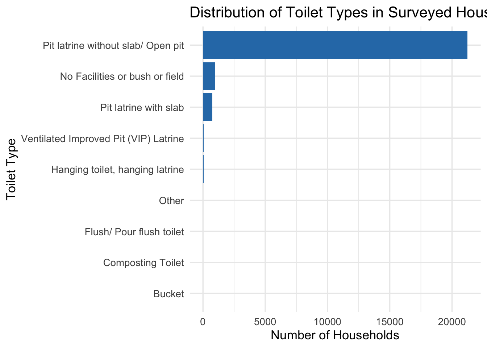
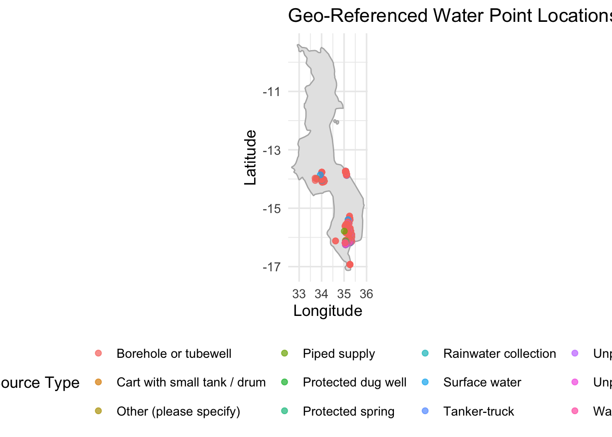

This dataset contains results from the Sustainable Development Goals (SDG) Household-Level Survey for WASH conducted by BASEFlow Malawi between 2018 and 2023, using the mWater platform. The data provides detailed, household-level insights into access to water, sanitation, hygiene, and environmental conditions across different communities in Malawi.
Each row represents a completed household survey and includes:
Survey metadata: submission date, consent, GPS location
Water point information: type, method of collection, region, location accuracy, altitude
Water quality indicators: microbial tests, confidence levels, associated health risks
Sanitation: toilet type, waste removal and treatment methods
Hygiene: handwashing facility availability, presence of water and soap
Other socio-environmental factors: including responses to structured and open-ended questions
🔍 Use Cases
This dataset is suitable for a range of applications, including:
WASH Program Monitoring & Evaluation Evaluate household access to clean water and sanitation services over time and across regions.
Public Health Research Identify environmental and behavioral factors contributing to hygiene-related illnesses.
Geospatial Analysis Map infrastructure such as boreholes and sanitation facilities to analyze regional disparities.
Evidence-Based Planning & Advocacy Support national and local policymakers in achieving SDG 6: Clean Water and Sanitation for All.
Education and Capacity Building Use in training programs and university courses on data-driven development, environmental health, or digital health systems.
Data Science and ML Train models to predict risk patterns or infrastructure needs based on survey indicators.
Installation
You can install the development version of washmalawi from GitHub with:
# install.packages("devtools")
devtools::install_github("openwashdata/washmalawi")
## Run the following code in console if you don't have the packages
## install.packages(c("dplyr", "knitr", "readr", "stringr", "gt", "kableExtra"))
library(dplyr)
library(knitr)
library(readr)
library(stringr)
library(gt)
library(kableExtra)Alternatively, you can download the individual datasets as a CSV or XLSX file from the table below.
- Click Download CSV. A window opens that displays the CSV in your browser.
- Right-click anywhere inside the window and select “Save Page As…”.
- Save the file in a folder of your choice.
| dataset | CSV | XLSX |
|---|---|---|
| washmalawi | Download CSV | Download XLSX |
Data
The package provides access to Sustainable Development Goals (SDG) Household-Level Survey data for Malawi between 2018 and 2023
washmalawi
The dataset washmalawi contains 23112 observations and 27 variables
washmalawi |>
head(3) |>
gt::gt() |>
gt::as_raw_html()| date_submitted | latitude | longitude | water_point_identification_method | traditional_authority | district | water_source_type | water_source_location | water_collection_time_mins | time_not_known | water_insufficiency_30days | water_insufficiency_30days_not_known | water_quality_tested | bacteriological_test_done_at_location | parameters_tested_methods | chemical_quality_tested | arsenic_tested_water | fluoride_tested_water | toilet_facility_type | toilet_facility_shared | waste_removed | waste_treated | waste_disposal | handwash_available | handwashing_water_presence | handwashing_soap_presence | handwashing_supplies_available |
|---|---|---|---|---|---|---|---|---|---|---|---|---|---|---|---|---|---|---|---|---|---|---|---|---|---|---|
For an overview of the variable names, see the following table.
| variable_name | variable_type | description |
|---|---|---|
| date_submitted | character | The date on which the household survey form was submitted. |
| latitude | numeric | The geographic latitude coordinate of the household location. |
| longitude | numeric | The geographic longitude coordinate of the household location. |
| water_point_identification_method | character | Method used to identify the water point |
| traditional_authority | character | The name of the Traditional Authority where the household is located. |
| district | character | The name of the district where the household is located. |
| water_source_type | character | Type of water source used by the household |
| water_source_location | character | Location of the water source relative to the household |
| water_collection_time_mins | numeric | Estimated round-trip time in minutes to collect water, including waiting time. |
| time_not_known | logical | TRUE if respondent does not know or cannot estimate the water collection time. |
| water_insufficiency_30days | character | Whether the household experienced water insufficiency in the past 30 days |
| water_quality_tested | character | Whether the water quality at the source has been tested. |
| bacteriological_test_done_at_location | character | Indicates whether a bacteriological test was performed on-site at the household or source. |
| parameters_tested_methods | character | List or description of water quality parameters tested and methods used. |
| chemical_quality_tested | character | Indicates whether chemical tests were performed on the water. |
| arsenic_tested_water | character | Indicates whether the water was tested for arsenic contamination. |
| fluoride_tested_water | character | Indicates whether the water was tested for fluoride levels. |
| toilet_facility_type | character | The type of toilet facility used by the household |
| toilet_facility_shared | character | Indicates whether the toilet facility is shared with other households. |
| waste_removed | character | Indicates whether household waste is regularly removed |
| waste_treated | character | Whether the waste is treated |
| waste_disposal | character | Method used for waste disposal |
| handwash_available | character | Whether the household has a designated place for handwashing. |
| handwashing_water_presence | character | Whether water was present at the handwashing location at the time of visit. |
| handwashing_soap_presence | character | Whether soap or detergent was present at the handwashing place at the time of visit. |
| handwashing_supplies_available | character | Overall availability of both soap and water for handwashing. |
Example
# Plot a bar chart for the type of toilets in use
library(washmalawi)
library(dplyr)
library(ggplot2)
library(maps)
# Filter out records with missing or empty 'toilet_type'
# Then count the number of occurrences for each toilet type
toilet_data <- washmalawi %>%
filter(!is.na(toilet_facility_type) & toilet_facility_type != "NA") %>%
count(toilet_facility_type, sort = TRUE)
# Create a horizontal bar chart showing the number of households
# using each type of toilet
ggplot(toilet_data, aes(x = reorder(toilet_facility_type, n), y = n)) +
geom_bar(stat = "identity", fill = "#2C7BB6") + # Use blue bars for counts
coord_flip() + # Flip axes to make the chart horizontal
labs(
title = "Distribution of Toilet Types in Surveyed Households", # Chart title
x = "Toilet Type", # X-axis label showing toilet types)
y = "Number of Households" # Y-axis label (number of entries)
) +
theme_minimal(base_size = 13)
# Plots maps for the water collection points
# Filter usable water point locations
water_map_data <- washmalawi %>%
filter(!is.na(latitude) & !is.na(longitude)) # Ensure geo-points are valid
# Get Malawi map outline
malawi_map <- map_data("world", region = "Malawi")
# Plot the water point locations
ggplot() +
geom_polygon(data = malawi_map, aes(x = long, y = lat, group = group),
fill = "gray90", color = "gray70") +
geom_point(data = water_map_data,
aes(x = longitude, y = latitude, color = water_source_type),
size = 2, alpha = 0.7) +
coord_fixed(1.3) +
labs(
title = "Geo-Referenced Water Point Locations in Malawi",
x = "Longitude", y = "Latitude", color = "Water Source Type"
) +
theme_minimal(base_size = 13) +
theme(legend.position = "bottom")
License
Data are available as CC-BY.
Citation
Please cite this package using:
citation("washmalawi")
#> To cite washmalawi in publications use:
#>
#> Mhango, E., Robertson, D., Mandala, C., et al. (2025). washmalawi:
#> WASH Household Level Survey Data 2018 - 2023. R package version
#> 0.0.0.9000. https://github.com/openwashdata/washmalawi
#>
#> Ein BibTeX-Eintrag für LaTeX-Benutzer ist
#>
#> @Manual{,
#> title = {washmalawi: WASH Household Level Survey Data 2018 - 2023},
#> author = {Emmanuel Mhango and Donald Robertson and Chifundo Mandala and M Nzengo and Muthi Nhlema and M. Banda and Khumbo Zinyongo and Christian Nedi and Leman Ngwena and M Kazembe and Yankho Mthindi and E. Mofolo and Jeffrey Bauleni and Khallen Malliot and Thandi Mtemangombe and Tamandani Tembo and Samuel Mlenga and Dufter Joshua and Andrew Mthunzi and Martha Kafuwa and Takondwa Tembo and Peter Singogo and Goodwin Mkandawire and Monica Msiska and Lemekezani Chilora and Tendai Jambo and William Kanyinji and Chikondi Kanyinji and Madalitso Kamamkhudza and Sylvia Siliya and Edward K Gadi and Buli Echika and Sunganani Monjeza and Derick Macheke and Fatsani Chinawa and Jonathan Sunthika and Precious Phiri and Bright Mphero and Rodney Kananji},
#> year = {2025},
#> note = {R package version 0.0.0.9000},
#> url = {https://github.com/openwashdata/washmalawi},
#> }